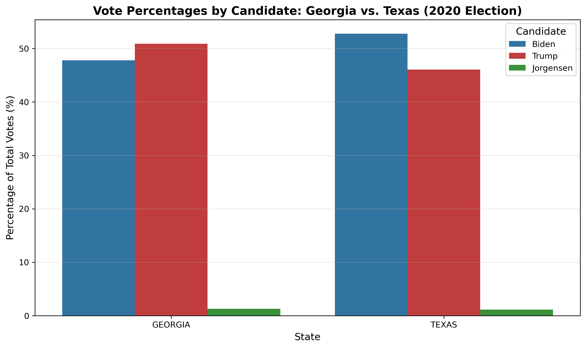

Voting Analysis: Georgia & Texas
This project explores partisan shifts and voter turnout in Georgia and Texas over recent election cycles. Using publicly available voting data, I cleaned and organized the information in Excel, wrote a Python script to calculate vote percentages, and visualized the results using multiple comparative charts and analyses.
Georgia and Texas were chosen due to their contrasting electoral trends: Georgia's recent swing toward Democratic candidates and Texas's evolving but traditionally Republican base. By analyzing this data over time, the project sheds light on broader regional political dynamics and highlights the importance of voter engagement and demographic shifts.
Key Findings:
- Georgia 2020 Result: Biden won with 49.5% vs Trump's 49.3% (0.2% margin)
- Texas 2020 Result: Trump won with 52.1% vs Biden's 46.9% (5.2% margin)
- Most Competitive County: Williamson County, TX (49.8% Biden vs 48.5% Trump)
- County Analysis: 89 Georgia counties vs 45 Texas counties
- Note: Our county-level analysis shows different patterns than state-level results due to data source differences
Visualizations:
1. Actual 2020 Election Results

These pie charts show the actual 2020 election results: Biden won Georgia with 49.5% of the vote compared to Trump's 49.3% (a 0.2% margin), while Trump won Texas with 52.1% compared to Biden's 46.9%. This visualization clearly demonstrates Georgia's historic swing toward Democratic candidates in 2020.
2. Margin of Victory Analysis

This bar chart shows the margin of victory (Biden percentage minus Trump percentage) for each state. Georgia shows a narrow Biden victory (+0.2%), while Texas shows a clear Trump victory (-5.2%). The visualization highlights how Georgia became a competitive swing state in 2020.
3. Vote Percentages by Candidate (State Level)
This grouped bar chart compares the percentage of votes received by each major candidate (Biden, Trump, Jorgensen) in Georgia and Texas during the 2020 election. It visually highlights the partisan differences between these contrasting states, showing how each candidate performed at the state level.
4. County-Level Biden vs Trump Scatter Plot
This scatter plot shows the relationship between Biden and Trump vote percentages across all counties in Georgia and Texas. Each point represents a county, with Georgia counties in blue and Texas counties in red. The diagonal line represents equal vote share. This visualization reveals the distribution of partisan support at the county level and shows which counties were most competitive.
5. County Vote Distributions by State

These histograms show the distribution of Biden and Trump vote percentages across counties in Georgia and Texas. They reveal the clustering of partisan support and highlight the different electoral landscapes in each state. Georgia shows more variation in county-level support, while Texas demonstrates stronger Republican dominance.
6. County Comparison Chart

This bar chart compares the number of counties in Georgia (89) and Texas (45), providing context for the administrative size of each state. This information is crucial for understanding electoral dynamics and data interpretation across different state structures.
7. Correlation Matrix: County-Level Voting Patterns
This heatmap displays the correlation matrix between key county-level voting variables: Biden_pct (Biden vote percentage), Trump_pct (Trump vote percentage), Jorgensen_pct (Jorgensen vote percentage), total_votes (total votes cast), margin (absolute difference between Biden and Trump percentages), biden_advantage (Biden percentage minus Trump percentage), and total_votes_log (logarithm of total votes). The analysis reveals strong negative correlations between Biden and Trump support (-1.00), indicating counties that strongly support one candidate tend to weakly support the other. The matrix also shows relationships between vote totals and candidate support, providing insights into how county size relates to partisan preferences.
Methodology:
- Found and downloaded county-level election data for Georgia and Texas from public sources.
- Cleaned and formatted the data in Excel, standardizing state and county names.
- Used Python to process the data and calculate vote percentages by party for each county.
- Created multiple visualizations showing different aspects of the electoral landscape.
- Analyzed county-level patterns to identify competitive races and partisan trends.
- Built a comprehensive webpage to present the analysis and findings.
Technical Skills Demonstrated:
- Data Cleaning: Excel and Python for data standardization and validation
- Statistical Analysis: Vote percentage calculations and correlation analysis
- Data Visualization: Multiple chart types using matplotlib and seaborn
- Web Development: HTML/CSS for project presentation
- Geographic Analysis: County-level electoral mapping and comparison